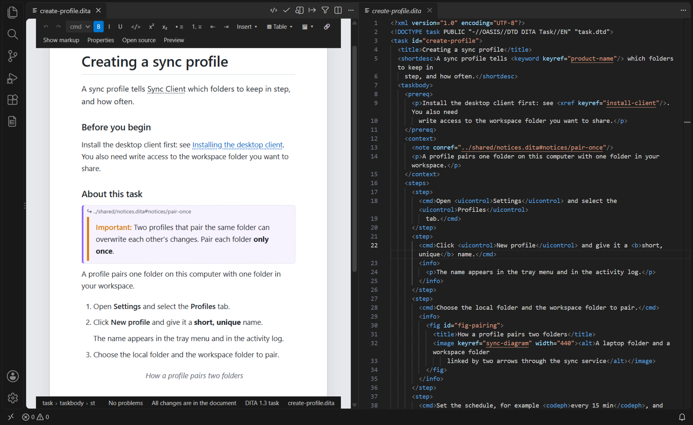
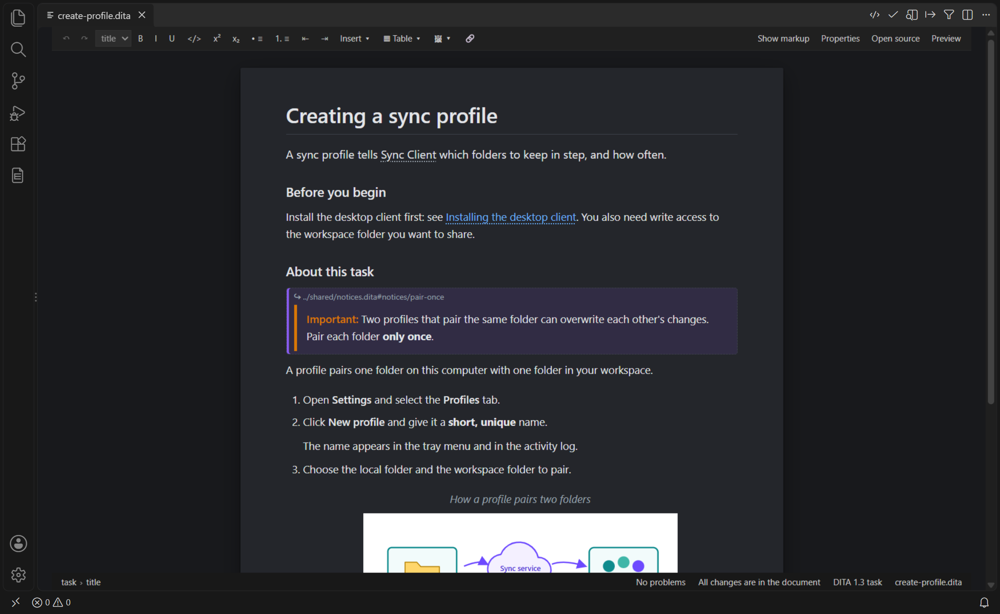

Working in the Visual Editor
Open a topic in the visual editor, find your way around the page, work side by side with the XML, and know what reaches the file.
Opening the Visual Editor
- In the text editor of a topic or a map, click Open in Visual Editor in the editor title bar, or run DITA: Open in Visual Editor. Maps and bookmaps open as rows (see Maps and Bookmaps in the Visual Editor).
- Right-click the editor tab and choose Reopen Editor With… → DITA Visual Editor, or use Open With… in the Explorer. To open topics in the visual editor by default, choose Configure default editor for '*.dita'… in that list.
- DITA: Open Source (or Open Source in the title bar) goes back to the text editor. The page's own Open source button opens the text beside the page.
Switching keeps your place: the visual editor opens at the text cursor, and the text editor at the page's cursor.
The Page
- Toolbar
- Undo and redo, the Style list, bold, italic, underline, code, superscript and subscript, bulleted and numbered lists, indent and outdent, Insert, Table, images and links; then Show markup, Properties, Open source and Preview.
- Status line
- The elements around the cursor (click one to select it), the problem at the cursor and the problem count, whether all changes are in the document, the grammar in use and the file name.
Side by Side with the Text Editor
With the text of the same topic open beside the page (the toolbar's
Open source, or View: Split Editor),
each follows the other: move the cursor in one and the other's cursor moves to the
same character; scroll one and the other scrolls to the same element. The setting
ditacraft.previewScrollSync turns it off.

How Changes Reach the File
Each change on the page becomes one small text edit of the document — the same as typing in the text editor. The dirty marker, Save, auto-save, undo in the text editor, Git diffs and validation all work as usual, and a Git diff shows only what you changed.
- Typing in a paragraph wrapped over several lines changes only the characters you
typed: its line breaks stay, and entity references such as
&are kept as written. - Elements you do not change are written back byte for byte: comments, attribute order and quotes, indentation.
- A structure that does not yet follow its DTD (a topic still without its title) is edited all the same; the problem is marked on the page.
- While the XML is not well-formed (a tag half-typed in the text editor), the page shows the last good version with a banner, and editing waits.
- A change made in the text editor while the page is open replaces the page's undo history; the text editor's undo still covers everything.
What Is Kept as Written
Some content is shown on the page but edited in the source; it is kept byte for byte:
- prolog metadata, index terms,
data, draft comments, comments and processing instructions (shown with Show markup); - footnotes, related links, objects, MathML and SVG;
- reused content, phrases whose text comes from a key and empty links, shown resolved (see Reused Content, Keys and Link Titles);
- named entity references such as
&product;, shown with their value; - elements the document type does not declare.
Themes and Styles
The page follows the preview settings: ditacraft.previewTheme (light,
dark, or following VS Code), ditacraft.previewPageWidth,
ditacraft.previewShowMarkup and
ditacraft.previewCustomCss — the page uses the DITA-OT HTML5 class
names, so a stylesheet written for your output styles it too.

Limitations
- Reused content, keys' texts and link titles are read only on the page: edit them where they come from, or make a local copy with Replace with copy.